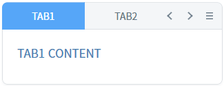
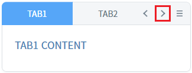
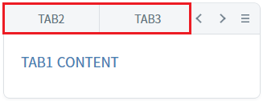
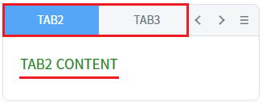
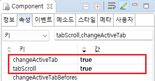

TabControl의 'changeActiveTab' 속성을 사용하여, 탭의 좌우 이동 버튼에 부가 기능을 설정한 예제입니다.
'changeActiveTab' 속성의 설정에 따른 동작은 다음과 같습니다.
false: [default] 탭이 탭 영역을 초과한 경우 영역을 좌우로 이동합니다.
true: 선택된 탭의 이전,이후 탭이 선택됩니다.
(기본 동작) changeActiveTab 미사용
changeActiveTab 사용
각 영역의 TabControl의 탭 영역의 이동 기능 버튼을 클릭하여 동작을 비교합니다.
예제 영역 '(기본 동작) changeActiveTab 미사용'에서 테스트합니다.1
STEP 1: 초기 상태를 확인합니다.
TabControl의 탭 'TAB1'과'TAB2'가 화면에 보이고, 탭 'TAB3', 'TAB4', 'TAB5', 'TAB6'은 화면에 보이지 않는 상태입니다. 첫 번째 탭 'TAB1'이 선택되어 있습니다.
Image 1.브라우저(Chrome) 실행 예시

2
STEP 2: 탭 영역의 오른쪽 이동 버튼을 클릭합니다.
Image 2.브라우저(Chrome) 실행 예시

3
STEP 3: 실행 결과를 확인합니다.
기 선택된 탭 'TAB1'이 활성화된 상태로 탭 영역만 오른쪽으로 이동합니다. 화면에 보여지는 탭은 'TAB2', 'TAB3'입니다.
Image 3.브라우저(Chrome) 실행 예시

예제 영역 'changeActiveTab 사용'에서 테스트합니다.1
STEP 1: 초기 상태를 확인합니다.
TabControl의 탭 'TAB1'과'TAB2'가 화면에 보이고, 탭 'TAB3', 'TAB4', 'TAB5', 'TAB6'은 화면에 보이지 않는 상태입니다. 첫 번째 탭 'TAB1'이 선택되어 있습니다.
Image 4.브라우저(Chrome) 실행 예시
2
STEP 2: 탭 영역의 오른쪽 이동 버튼을 클릭합니다.
Image 5.브라우저(Chrome) 실행 예시
3
STEP 3: 실행 결과를 확인합니다.
탭 'TAB2'가 선택(활성화)되고 탭 영역이 오른쪽으로 이동합니다. 화면에 보여지는 탭은 'TAB2', 'TAB3'입니다.
Image 6.브라우저(Chrome) 실행 예시

1
TabControl의 속성을 정의합니다.
[필수] tabScroll="true"
탭 영역에 탭들의 이동과 선택의 편의성을 제공하는 기능 사용 설정
[필수] changeActiveTab="true"
탭 이동 버튼을 클릭하면 다음(이전)탭이 선택(활성화)되도록 설정
Image 7.웹스퀘어 스튜디오의 Component View - 속성 설정 예시

Example 1.Source
<!-- tabControl 소스 본문 예시 --> <w2:tabControl tabScroll="true" changeActiveTab="true" id="tac_exam2"> <!-- 중략 --> </w2:tabControl>
tabScroll
changeActiveTab